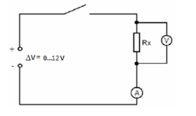
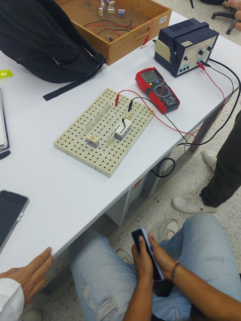
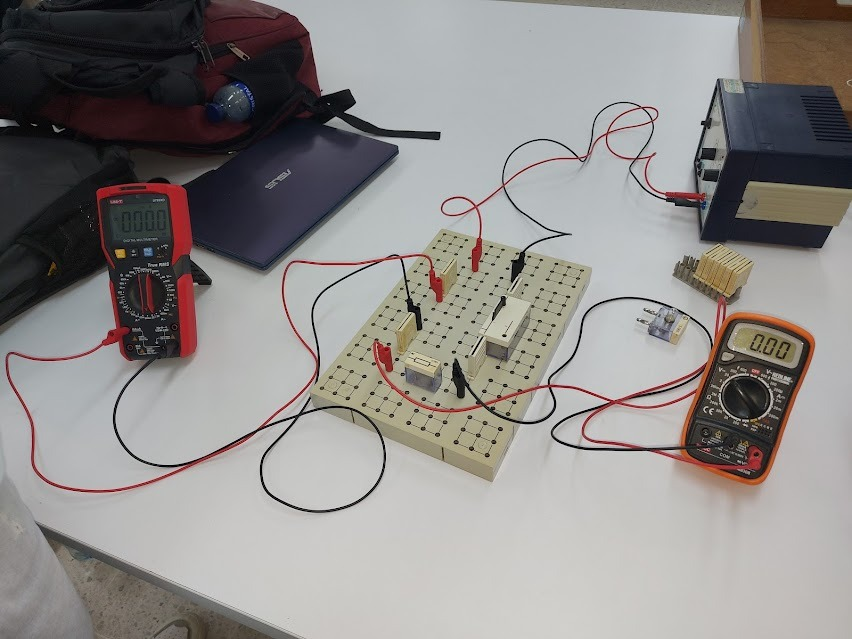
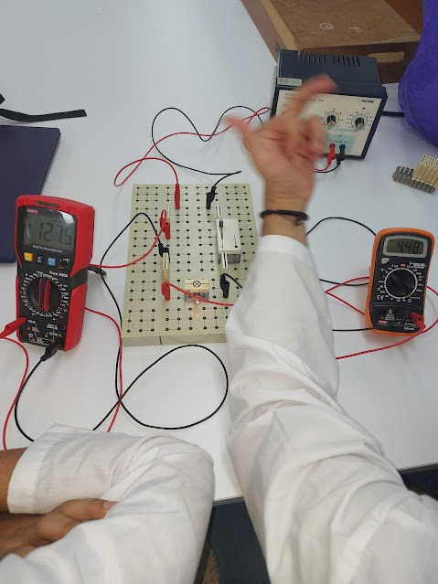
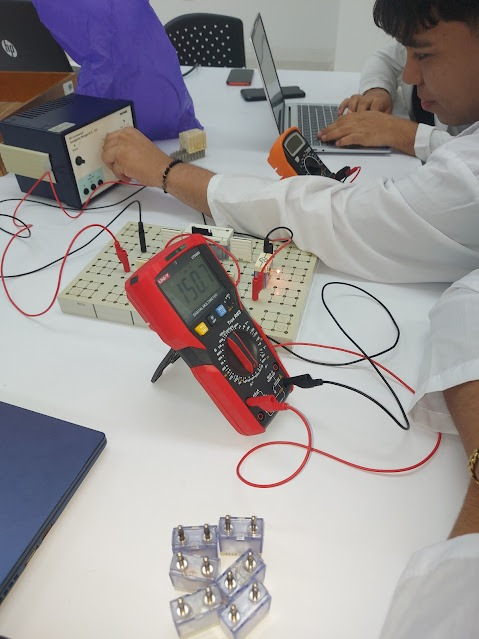
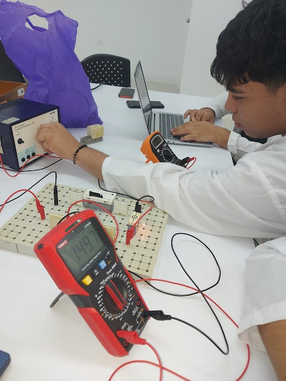

LA LEY DE OHM
Tópicos relacionados
Materiales óhmicos, materiales no óhmicos, resistividad eléctrica.
Objetivo
Estudiar la relación entre la diferencia de potencial, la intensidad de corriente y la resistencia eléctrica para materiales óhmicos y no óhmicos.
Materiales a usar
| Materiales | Cantidad |
|---|---|
| Panel de montajes | 1 |
| Interruptor | 1 |
| Conectores | 10 |
| Resistencias (ver tabla 3) | 1 de cada valor |
| Lampara de 12V/3W | 1 |
| Cables de conexión | 6 |
| Multímetro | 2 |
| Fuente de alimentación | 1 |
Montaje y procedimiento
Esquema eléctrico
Parte 1
- Mide el valor experimental de la resistencia de 100Ω y anótalo en la tabla 1 en la columna (R medida).
- Monta el circuito según la figura 1, y pon como Rx la resistencia de 100 Ω o en su defecto otra.
- Eleva la diferencia de potencial (∆V) desde 0V hasta 9V en pasos de 1,5 V y lleva los valores medidos de la intensidad de corriente a la tabla 1, en la columna de I(A).
Tabla 1. Valores medidos de la intensidad de corriente, con resistencia fija
| R (Ω) nominal | R (Ω) medida | ∆V (V) | I (A) | ∆V/I (Ω) |
|---|---|---|---|---|
| 100 | 0 | |||
| 1.5 | ||||
| 3 | ||||
| 4.5 | ||||
| 6 | ||||
| 7.5 | ||||
| 9 |
Parte 2
- Repite la parte anterior, pero remplazando el resistor por una lámpara de 12V/3W y anota los datos en la tabla 2.
- Observa el brillo de la lámpara durante el experimento y anota lo que observas.
Tabla 2. Valores medidos de la intensidad de corriente, con lámpara de 12V/3W
| ∆V (V) | I (A) | ∆V/I (Ω) |
|---|---|---|
| 0 | ||
| 1.5 | ||
| 3 | ||
| 4.5 | ||
| 6 | ||
| 7.5 | ||
| 9 |
Parte 3
- Mide el valor experimental de cada resistencia y anótalos en la tabla 3, respectivamente, en la columna (R medida).
- Remplaza la lámpara por un resistor, empieza por el de menor resistencia.
- Con ayuda del voltímetro, mantén una diferencia de potencial fija de 10V en los extremos del resistor.
- Anota los valores de intensidad de corriente en la columna (I medida), de la tabla 3.
- Repite el proceso para los demás resistores.
Tabla 3. Valores medidos de la intensidad de corriente, con diferencia de potencial fija
| ∆V (V) | R nominal (Ω) | R medida (Ω) | I (A) |
|---|---|---|---|
| 10 | 100 | ||
| 150 | |||
| 220 | |||
| 1k | |||
| 10k |
Evaluación
- A partir de la tabla 1, realiza un gráfico de la intensidad de corriente I, en función de la diferencia de potencial ∆V. ¿Qué concluyes de esta gráfica?
- Verifique su hipótesis encontrando el cociente ∆V/I, de la tabla 1, para todo par de valores de ∆V e I.
- Realice el correspondiente ajuste a la gráfica I vs ∆V. ¿Cuál es la ecuación que liga las variables? ¿Cuál es el significado físico de la pendiente de esta gráfica?
- Compare el valor de la pendiente, de la anterior gráfica, con el valor nominal del resistor y halle el error relativo. ¿Qué puede concluir?
- A partir de los datos de la tabla 2, repita los puntos 1, 2, 3 y 4. Realice el análisis correspondiente.
- Compare o contraste las gráficas, I vs ∆V, para la lámpara con la que se obtuvo para el resistor ¿Que puede concluir?
- A partir de los datos de la tabla 3, realiza un gráfico de la intensidad de corriente I, en función de la resistencia medida (R medida). Realícele el análisis correspondiente a esta gráfica.
- ¿En general, cual es la ecuación que liga las variables ∆V, I y R?
- Si la relación R=∆V/I es cierta para I≠0. ¿Bajo qué condición se aplica la ley de Ohm?
Bibliografía
- Serway, R. Física Volumen 2. Ed. McGraw Hill
- Tipler, P. Física Volumen 2. Ed. Reverté
- Hewitt, P. Física Conceptual. Ed. Addison Wesley
- Alonso, M. Finn, E. Física Volumen. Ed. Pearson
- Halliday, D. Resnick R. Krane, K. Física Tomo 2. Ed. CECSA
- Tippens, P. Física Fundamental. Ed. McGraw Hill
Evidencias
    Resultados
×